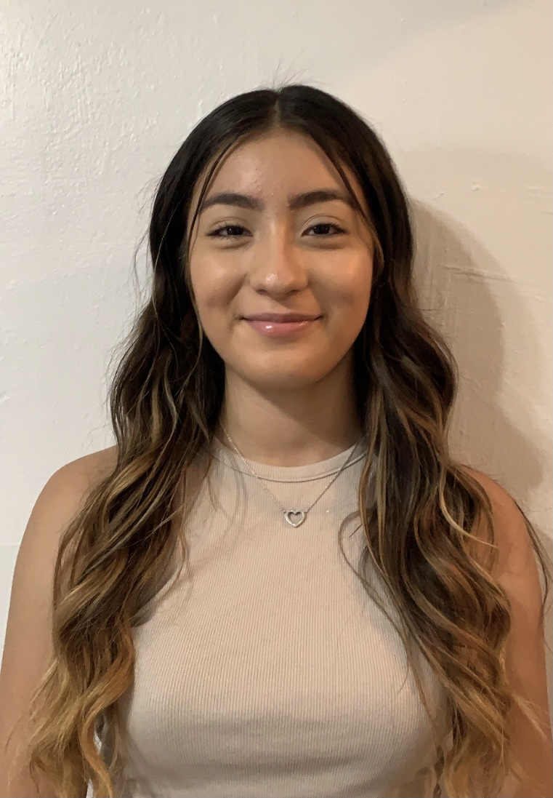
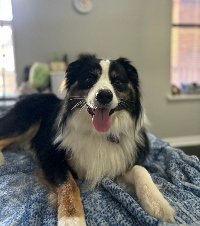
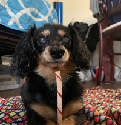

My name is
Kimberly Dominguez
Intro - About Me
Welcome to my homepage here are some fun facts about me:
- I am the second oldest of five siblings
- I was born and raised in Chicago, IL
- My favorite fruits are watermelon and mango
- I love dogs! I used to walk and take care of them over the summer through an app called Wag!

